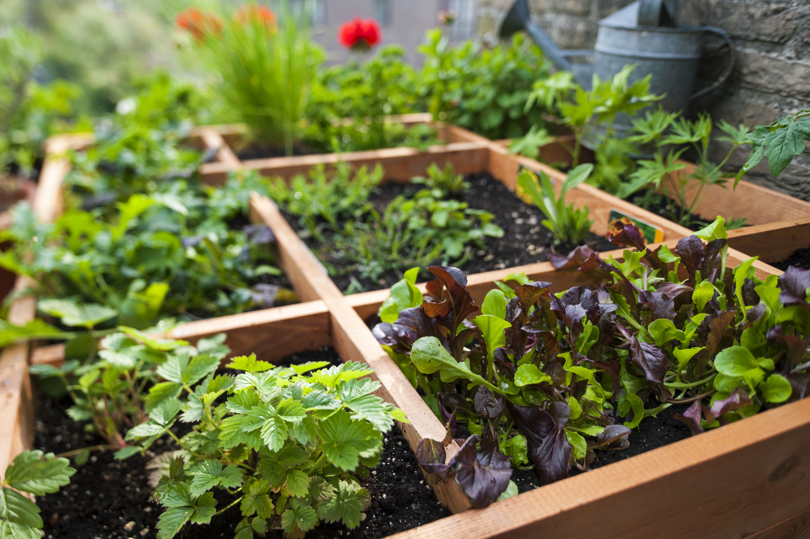

Introduction
Starting a small garden can bring joy and beauty to your home. It's a rewarding activity that can be simple if you follow a few basic steps.
Planning Your Garden
- Decide on the type of garden: vegetable, flower, or herb.
- Choose a location with good sunlight and access to water.
- Plan your garden layout according to the space available.
Materials Needed
- Gardening tools (shovel, rake, gloves)
- Seeds or young plants
- Soil and compost
- Watering can or hose
Getting Started
- Prepare the soil by tilling and adding compost.
- Plant your seeds or young plants according to the package directions.
- Regularly water your garden, keeping the soil moist but not waterlogged.
- Monitor plant growth and adjust care as needed.
Maintenance and Care
- Remove weeds regularly to prevent competition for nutrients.
- Apply mulch to help retain soil moisture and prevent weeds.
- Check for pests and diseases and treat them promptly.